Module 3.
여기서부터 Claude Code입니다. 기능을 줄이지 않은 원본 도구입니다.
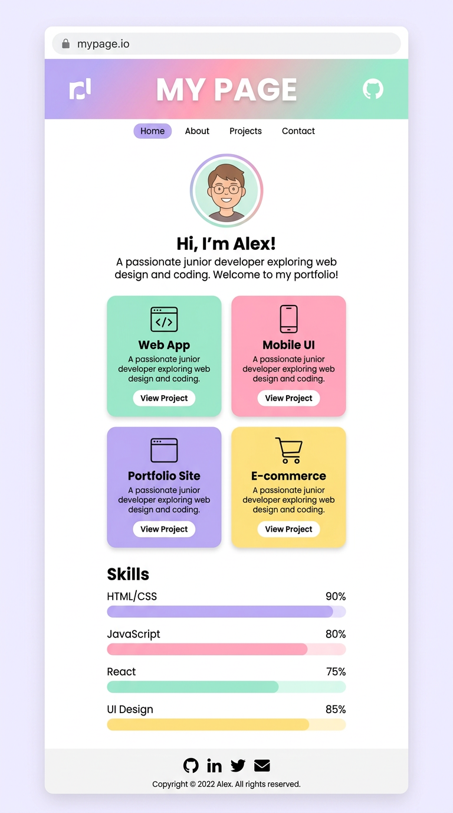
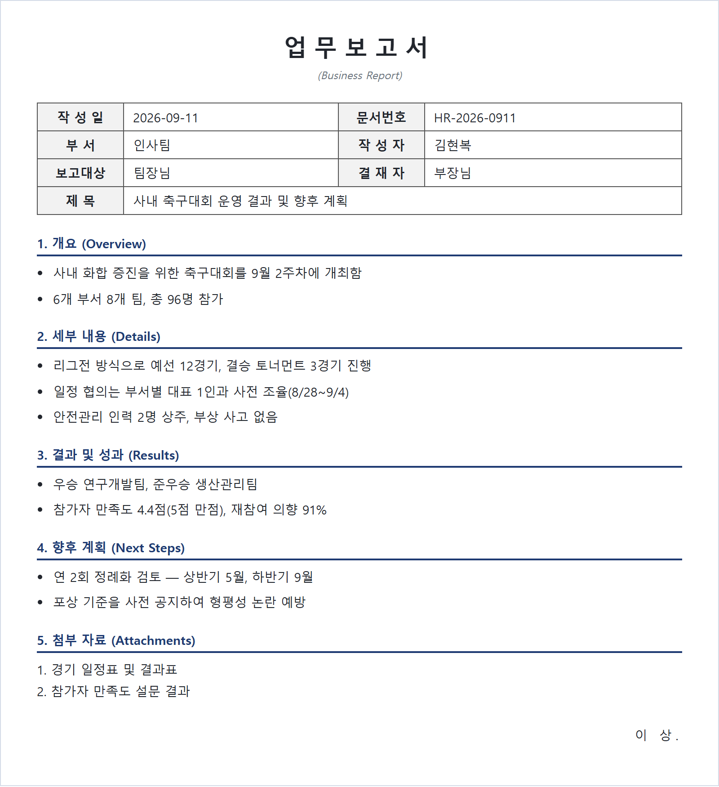
M1
웹페이지 · 업무보고서
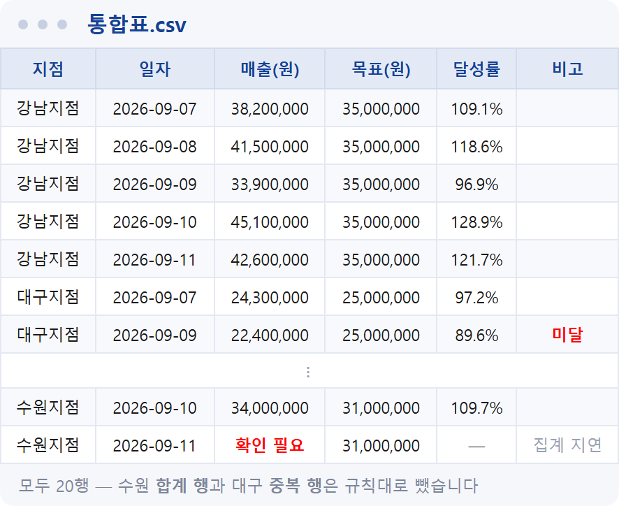
M2
주간 실적 통합표
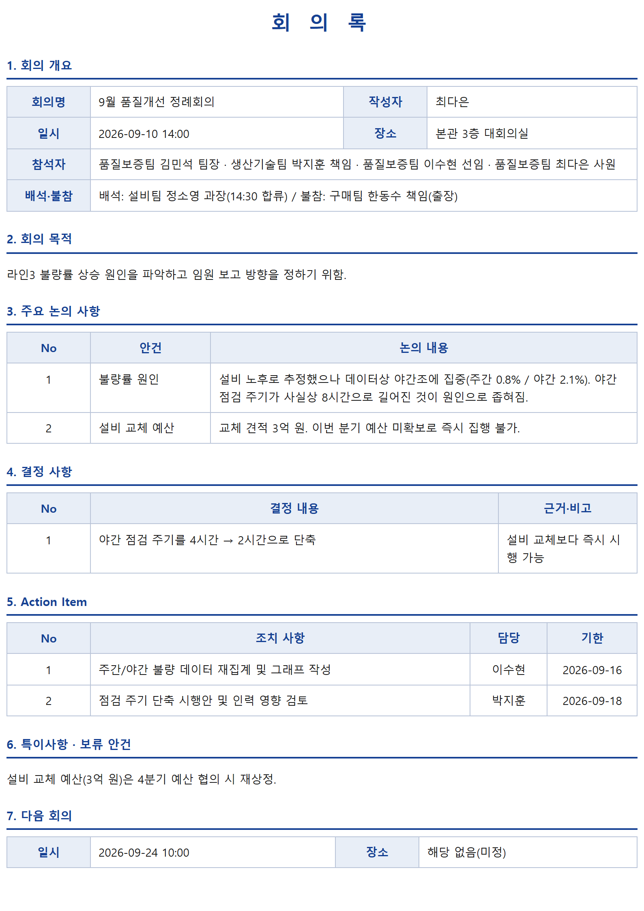
M3
회의록 PDF
지금 여기
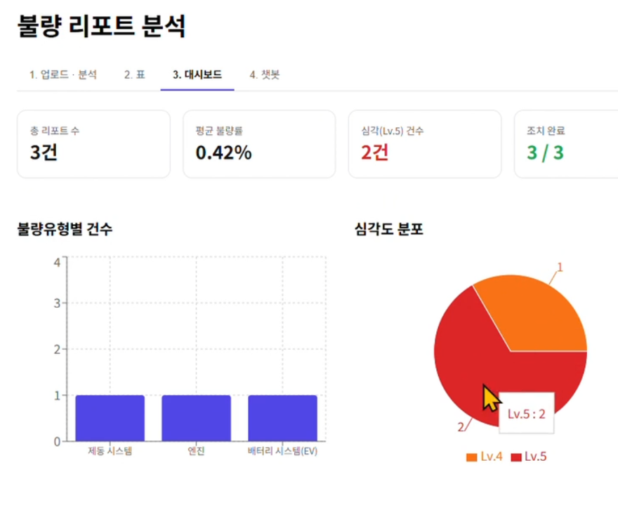
M4
PDF 분석 대시보드
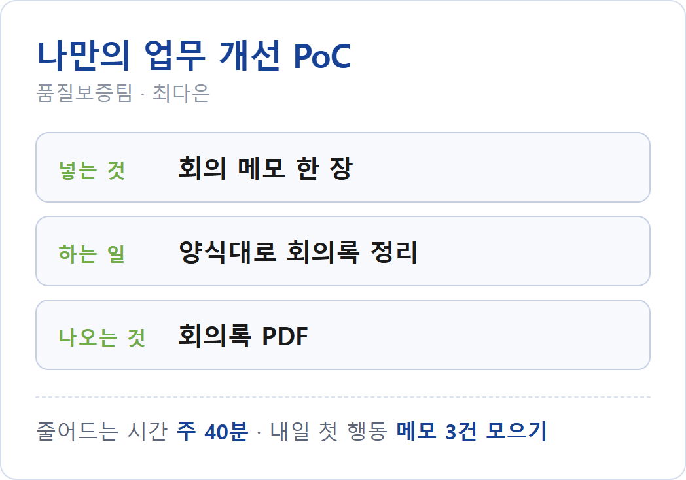
M5
아이디어 기획서 · 목업 앱
실리콘밸리에서는 AI와 어떻게 협업하고 있는지
약 3분 가량 영상을 통해 알아보겠습니다.
앞 화면을 함께 봐 주세요
이 영상은 강사 화면으로 재생합니다 — 약 3분 30초
회의 중에 급하게 적은 메모 한 장을, 명령 한 줄로 회의록 PDF까지 만듭니다.
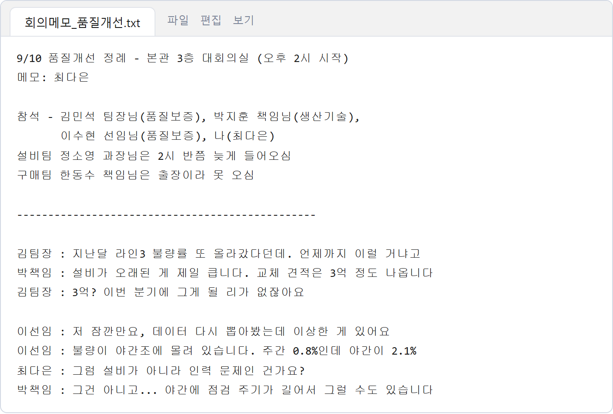
① 받은 회의 메모 — 날것 그대로
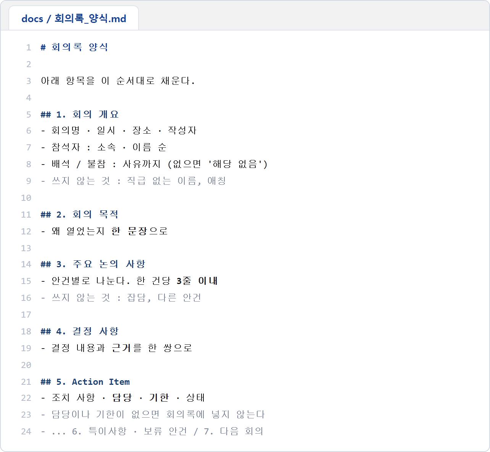
② 내가 적은 양식 지침
③ 명령 한 줄 → 회의록 PDF
CHAPTER 1
작업 폴더를 열고 터미널에서 Claude Code를 띄우는 것까지 준비합니다.
준비되신 분은 지금 실행해서 잘 되는지 확인해 주세요.
아래 순서대로 화면이 나오면 준비 끝입니다.
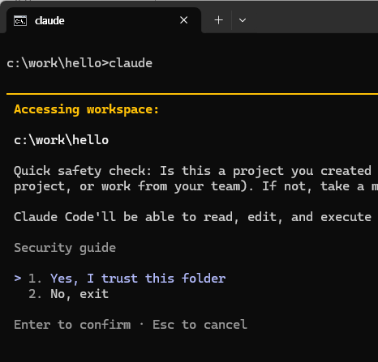
폴더를 물으면 Yes, I trust this folder
둘 다 말로 만드는 방식은 같습니다. 어디까지 갈 수 있느냐가 다릅니다.
H Chat Desktop
Claude Code
프로그램을 새로 배우지 않습니다. 자리 배치만 익히면 됩니다.
VS Code는 코딩용이 아니라 문서를 열어 보는 편집기로만 씁니다.
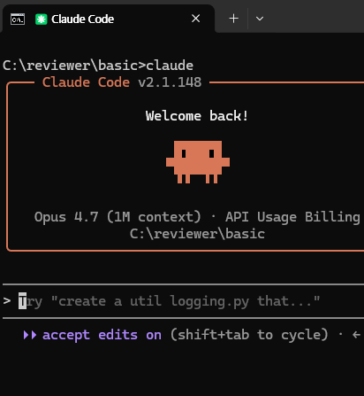
명령 프롬프트 + Claude Code
일을 시키는 곳
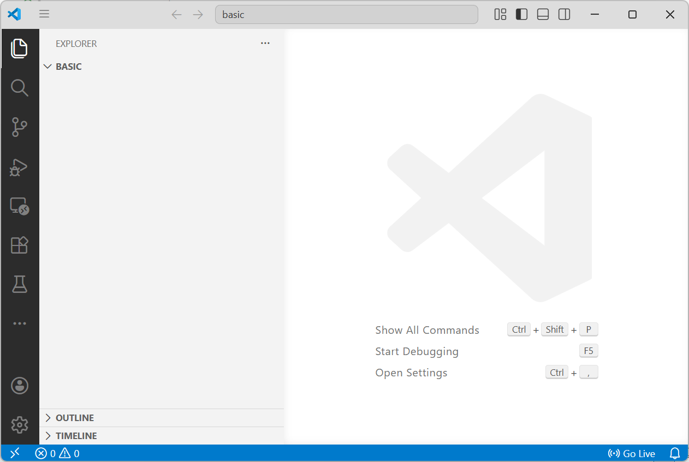
VS Code
만들어진 문서를 확인하는 곳
code .
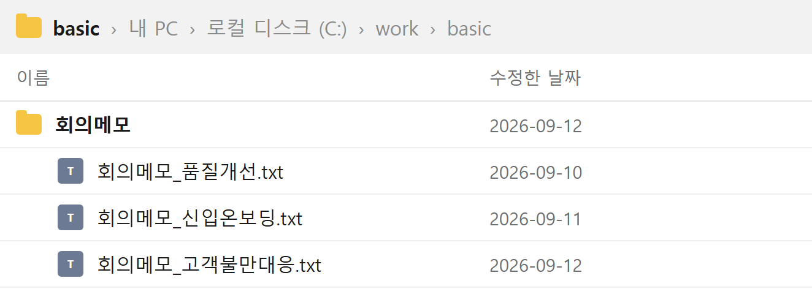
이 상태가 되면 준비 끝 — 회의메모 폴더 하나
터미널은 AI에게 말을 거는 창입니다. 그 이상은 몰라도 됩니다.
claude
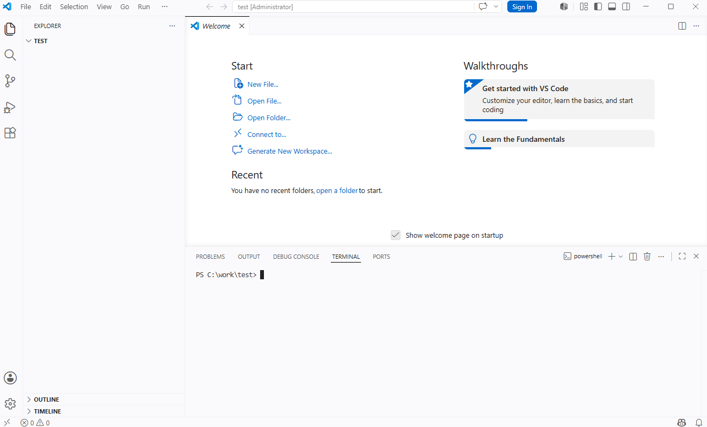
아래쪽에 열리는 검은 창이 터미널입니다
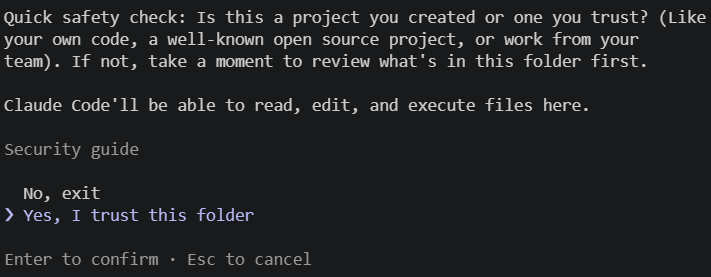
Yes, I trust this folder 에 두고 Enter
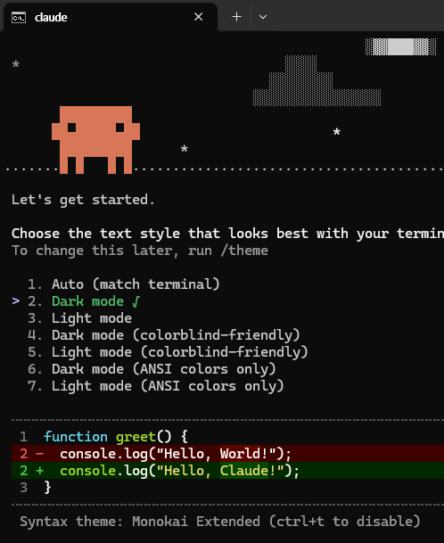
그다음은 화면 색 — 한 번만 물어봅니다
M1에서 고른 두뇌, M2에서 본 공들이는 정도 — 여기서도 똑같습니다.
터미널에 슬래시(/)로 시작하는 한 단어를 넣으면 고르는 창이 열립니다.
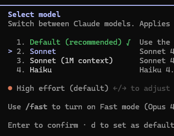
/model — 목록에서 Sonnet
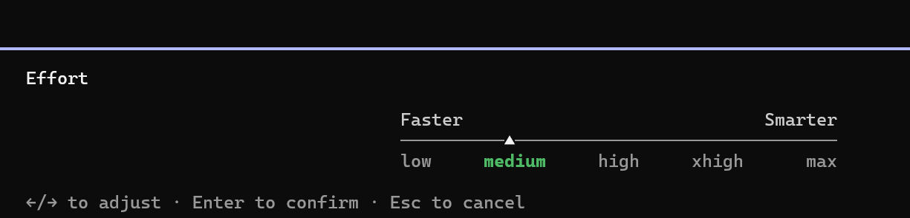
/effort — 실습은 medium 으로
기본값은 파일을 고칠 때마다 “고쳐도 될까요?” 하고 묻습니다.
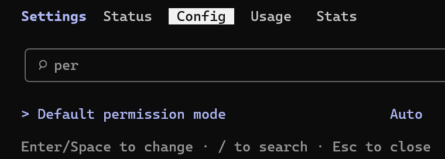
Default permission mode → Auto
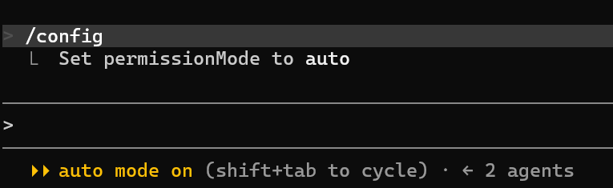
아래에 auto mode on 이 뜨면 완료
CHAPTER 2
회의 중에 적은 메모 한 장이 회의록 PDF가 되기까지를 그려 봅니다.
양식 파일은 받지 않습니다. 양식이 어떤 것인지를 내가 문서로 적어 둡니다.
마지막에 나오는 회의록 PDF
정리된 글이 아닙니다. 받아 적은 그대로입니다 — 우리가 실제로 남기는 메모처럼.
이 안에 들어 있는 것
참석자 · 지각 · 불참 / 오간 의견 / 결정된 것 / 누가 언제까지 할 것인가
같이 섞여 있는 것
잡담과 다른 안건 — 회의록에는 들어가면 안 되는 것들
주의
메모에 없는 내용은 지어내면 안 됩니다. 비어 있으면 비어 있는 대로 둡니다.
CHAPTER 3
매번 설명하지 않도록, 공통 기준을 문서 한 장에 적어 둡니다.
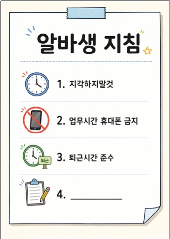
새로 온 알바생에게 적어서 건네는 지침서 입니다.
① 어떤 일을 하는 곳인지
이 프로젝트의 목적을 적어 줍니다.
② 무엇을 지켜야 하는지
Agent 가 지켜야 할 지침을 적어 줍니다.
AI 와 일할 때는 txt 보다 md 를 더 많이 씁니다.
.md 가 뭔가요
Markdown — 「마크다운」 이라고 읽습니다.
어렵지 않나요
txt 처럼 쓰면 됩니다. 메모장에 글 적듯 그대로 적으면 됩니다.
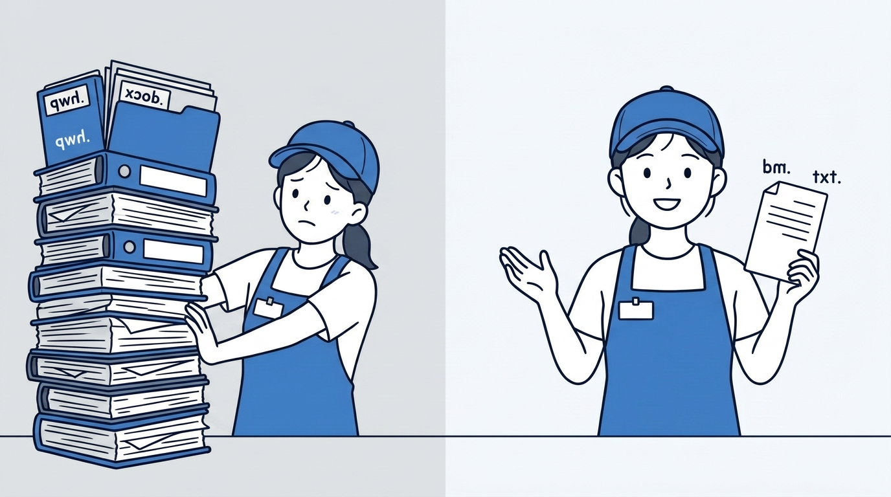
.docx · .hwp — 느리고 토큰도 더
읽기 전에 한 번 풀어야 합니다
.txt · .md — 빠르고 토큰도 적게
지침은 여기에 적습니다
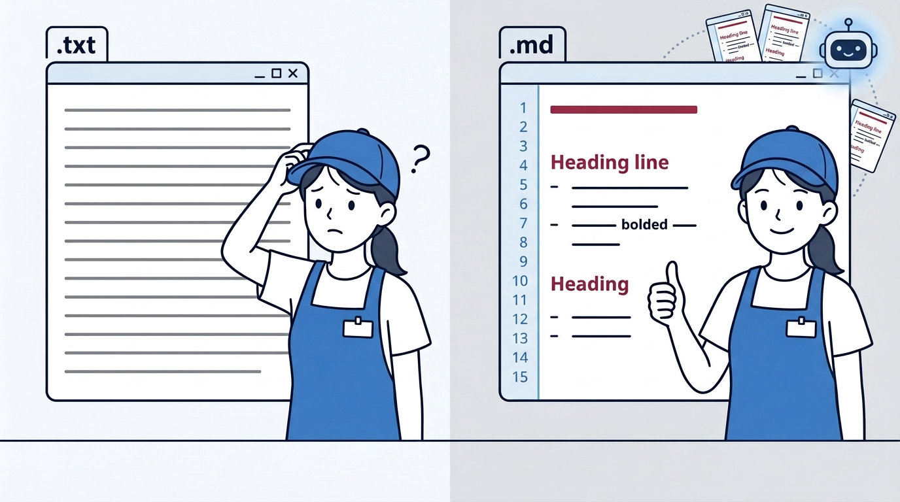
txt — 줄글만 남는다
제목인지 목록인지 알 수 없어요
md — 글의 뼈대가 보인다
# 제목 · - 목록 · **강조**
AI가 딥러닝으로 배운 글에 md 가 유난히 많았습니다 — 그래서 더 잘 알아듣습니다
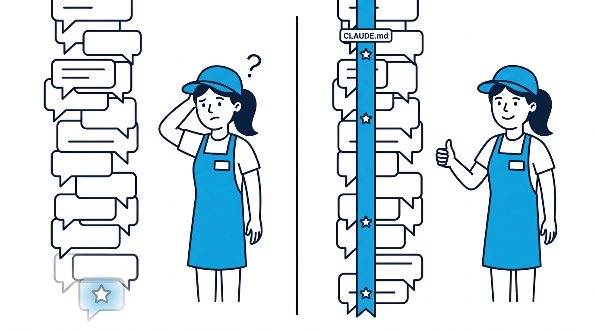
앞에 말한 중요한 내용도
대화가 쌓일수록 흐려집니다
CLAUDE.md 는 모든 대화 앞에
매번 다시 붙어 기준이 됩니다
① 빈 파일부터 만들기
CLAUDE.md를 루트폴더에 하나 만들고, 빈 파일로 만들어줘.
② 이 프로젝트의 목적 적기
CLAUDE.md에 아래 목적을 적어줘.
1) 회의메모 폴더의 메모를 읽고, 안건·결정·할 일을 가려낸다.
2) 그 내용을 docs/회의록_양식.md 에 적힌 항목과 순서대로 정리해 회의록을 만든다.
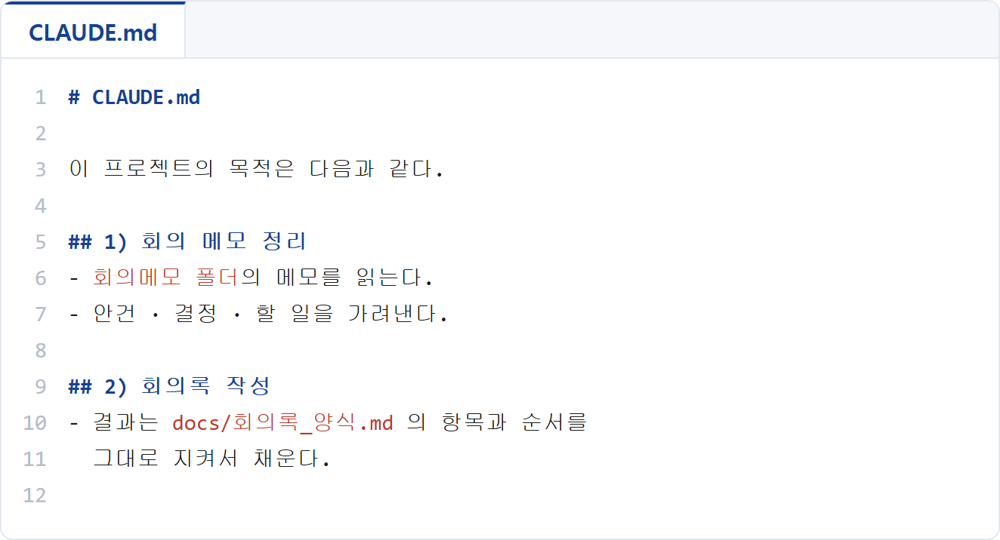
VS Code로 열어 내용이 들어갔는지 확인합니다
회의메모/회의메모_품질개선.txt 에 나오는 사람들의
이름·소속·역할을 CLAUDE.md에 정리해줘.
라인3, 야간조, 정례처럼 우리 부서에서만 쓰는 말도
뜻과 함께 적어줘.
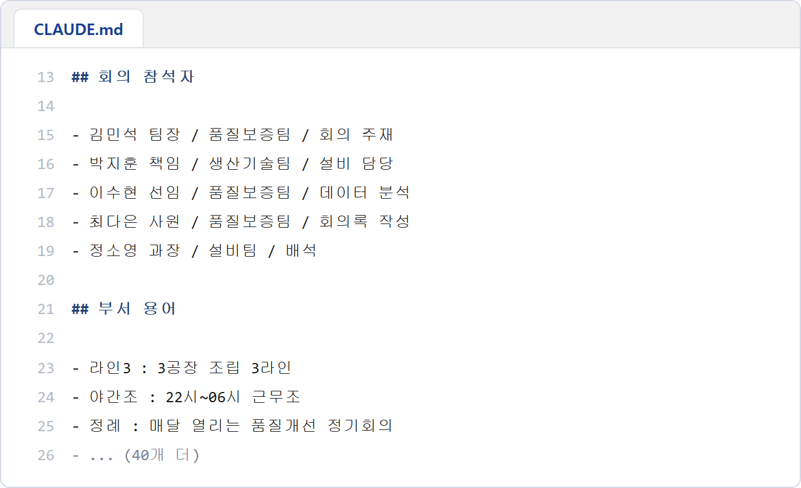
참석자와 용어가 문서로 정리됩니다
회의록을 쓸 때 지킬 규칙을 CLAUDE.md에 더 적어줘.
· 논의 내용은 한 건당 3줄을 넘기지 않게
· Action Item에는 담당자와 기한을 반드시
· 메모에 없는 내용은 지어내지 말고 '해당 없음'으로
· 결과물은 output 폴더에 회의록_(메모이름).html 로
(메모이름은 회의메모_ 를 뗀 뒤 — 예) 회의록_품질개선.html)
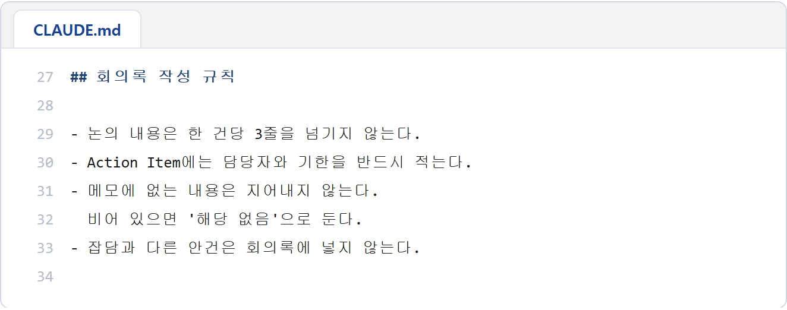
적은 규칙이 문서에 쌓입니다
무엇이 남는가
말로 부탁하던 조건이 지켜지는 기준이 됩니다.
앞에서 본 네 가지를 순서대로 넣어 내 CLAUDE.md 한 개를 완성합니다.
왜 하는가
매번 다시 설명하던 것을 파일 하나에 모아 둡니다.
무엇이 남는가
폴더 맨 위에 남는 CLAUDE.md — 이후 실습이 전부 이 파일을 기준으로 움직입니다.
CLAUDE.md는 모든 질문 앞에 매번 붙습니다.
그래서 여기가 무거워지면 정작 내 질문이 묻힙니다.
CHAPTER 4
자주 바뀌는 내용은 밖으로 빼고, 양식을 문서로 적어 메모를 회의록으로 정리합니다.
다 적어 두면 책상이 차요
매번 전부 읽느라 느려집니다
CLAUDE.md 엔 경로만
docs/참석자.md
docs/용어집.md
필요할 때만 꺼내 옵니다
① 담아 둘 파일 먼저 만들기
docs 폴더를 만들고, 그 안에 참석자.md 와 용어집.md 를
빈 파일로 만들어줘.
② 내용 옮기기
CLAUDE.md에 있는 참석자와 용어를 docs의 두 파일로 옮기고,
CLAUDE.md에는 어떤 파일이 있는지만 남겨줘.
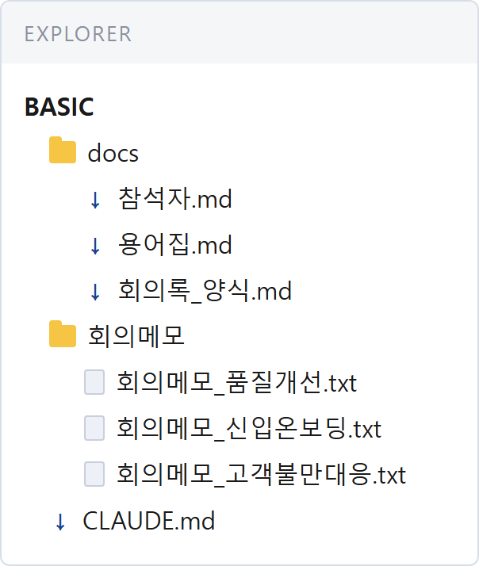
내용이 파일로 나뉩니다
왜 나누는가
자주 바뀌는 것은 밖으로. CLAUDE.md에는 안 바뀌는 것만 남깁니다.
docs/회의록_양식.md 를 만들어줘. 회의록에 들어갈 항목과 순서를 적는 문서야.
1. 회의 개요 — 회의명 · 일시 · 장소 · 작성자 · 참석자 · 배석/불참
2. 회의 목적 — 한 문장
3. 주요 논의 사항 — 안건별로, 한 건당 3줄 이내
4. 결정 사항 — 결정 내용과 근거
5. Action Item — 조치 사항 · 담당 · 기한 · 상태
6. 특이사항·보류 안건 7. 다음 회의
항목마다 무엇을 쓰는지와 쓰지 않는 것을 한 줄씩 덧붙여줘.
양식이 읽을 수 있는 글로 남습니다
왜 파일이 아니라 글인가
워드 양식은 칸만 있습니다. 글로 적으면 ‘왜 그렇게 쓰는지’까지 지켜집니다.
회의메모/회의메모_품질개선.txt 로 회의록을 만들어줘.
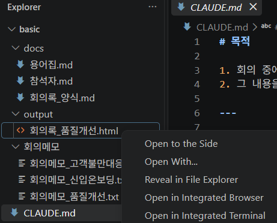
1 output 안의 html 을 오른쪽 클릭
2 메뉴에서 Reveal in File Explorer
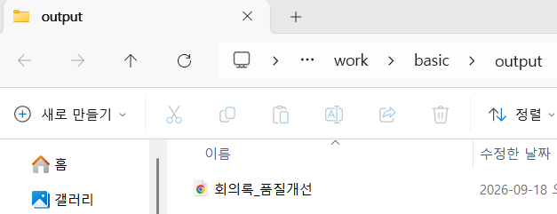
3 탐색기가 work › basic › output 을 엽니다 — 그 파일을 더블클릭
4 브라우저에 이 회의록이 나오면 성공 — PDF 는 다음 단계에서
작업 중에 궁금한 걸 물으면 그 이야기도 바구니에 쌓입니다.
/btw 로 물으면 답만 듣고 대화에는 남지 않습니다.
그냥 물어보면
/btw 로 물어보면
곁다리로 물어볼 때
/btw 방금 만든 CLAUDE.md는 어느 폴더에 저장됐어?
CHAPTER 5
자주 쓰는 지시를 명령 한 줄로 묶습니다.
매번 길게 설명하던 것을 명령 하나로 만들어 둘 수 있습니다.
요리책의 레시피처럼, 필요할 때 이름만 부르면 됩니다.
반복하는 프롬프트를 명령으로
늘 쓰는 긴 지시문을 이름 하나로
주간보고 정리 · 메일 초안 만들기
도구를 쓰는 명령으로
파일 편집 · 검색까지 묶어서 실행
문서를 읽어 표로 정리해 저장까지
손으로 한 일을 명령 한 줄로 묶습니다.
① 스킬 만들기
뒤에 메모 이름을 적으면 CLAUDE.md 규칙대로 회의록을 만들고,
그 html 을 엣지(msedge.exe) headless 로 인쇄해
같은 이름의 pdf 까지 내주는 스킬을
.claude/skills/minutes/SKILL.md 파일로 만들어줘. (이름은 영어로)
새로 설치하는 프로그램은 쓰지 마.
지금은 SKILL.md 파일만 만들고, 회의록은 만들지 마.
② 스킬 인식시키기
/reload-skills
③ 목록에 있는지 확인
/skills
④ 다른 메모로 실행 — 이때 PDF 까지
/minutes 회의메모_신입온보딩
이어서 — 내 업무로
docs/회의록_양식.md 만 우리 팀 양식으로 고치면 내 업무용이 됩니다.
M1에서 한 것과 똑같은 순서입니다. 항목 이름만 다릅니다.
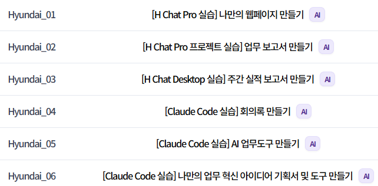
목록에서 Hyundai_04 를 고릅니다
짜잔 — 오늘 안 다룬 것도
PPT 만들기 · Excel 만들기 · 디자인 시안 뽑기
업무에 쓴다면
보고서 작성 — 회사 양식대로 쓰고 검토까지
자료조사 비교 — 조사 → 요약·비교 → 인사이트
문서 검토 — 누락 · 논리 · 표현 · 보안 점검
CHAPTER 6
Skill 이 레시피라면, MCP 는 알바생이 손에 쥐는 도구입니다.
H Chat 에서는
커넥터를 켜면 Confluence · Jira 에 바로 붙었습니다.
Claude Code 에서는
그 버튼이 없습니다. 대신 MCP 로 같은 일을 합니다.
쓸 수 있는 서비스가 많습니다
Confluence · Jira · Teams · Outlook · 브라우저 … 필요한 것을 계속 더할 수 있습니다.
한 번 붙여 두면
그다음부터는 말로만 시키면 됩니다. 도구가 늘수록 맡길 수 있는 일도 늘어납니다.
사외망 — 집 · 카페
마켓플레이스에서 골라 받습니다. 클릭 몇 번이면 붙습니다.
사내망에서는 이 길이 막혀 있습니다.
사내망 — 회사 안
사내 MCP 공유소에서 받습니다 — 연구소가 운영하는 Confluence 페이지입니다.
사내 MCP 공유소
Agentic AI Hub for Engineers — [Claude Code Lab] · Confluence
ade-conf.hmckmc.co.kr › spaces › CCCL › 📦 사내 MCP 공유소
연구소에서 Skill 과 MCP 를 함께 모아 두고 있습니다. 제목을 누르면 열립니다 — 사내망에서만 들어갑니다.
① 빈 파일부터 만들기
.mcp.json 빈 파일을 프로젝트 루트 폴더에 하나 만들어줘.
② 그 파일에 이 내용 넣기
방금 만든 .mcp.json 에 아래 내용을 그대로 넣어줘.
{
"mcpServers": {
"playwright": {
"command": "cmd",
"args": ["/c", "npx", "@playwright/mcp@latest",
"--browser", "msedge"]
}
}
}
③ Claude Code 를 껐다가
/exit
④ 다시 켜면 — 아래 화면이 뜹니다
claude
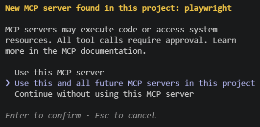
두 번째 — 이 프로젝트에서는 앞으로도 쓰기를 고르고 Enter
playwright 로 네이버 뉴스에서
최근 기사 하나를 찾아줘.
제목과 링크, 그리고 세 줄 요약을 알려줘.
무엇이 달라졌나
붙이기 전에는 글로 시키는 것만 했습니다. 이제 브라우저를 직접 열어 보고 옵니다.
이런 것도 됩니다
사내 위키에서 표 가져오기 · 우리 화면이 제대로 뜨는지 확인 · 화면 캡처
오늘 익힌 것은 기능이 아니라 일을 맡기는 방식입니다.
이어서 M4. 데이터 시각화 · AI 업무도구 만들기